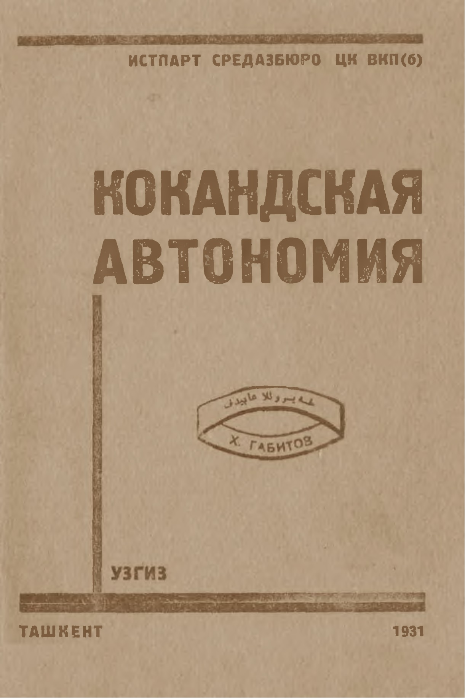
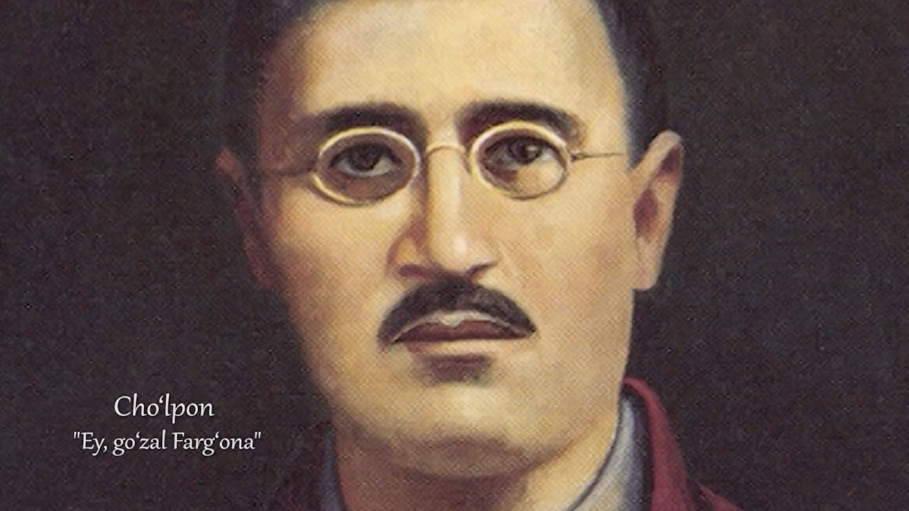
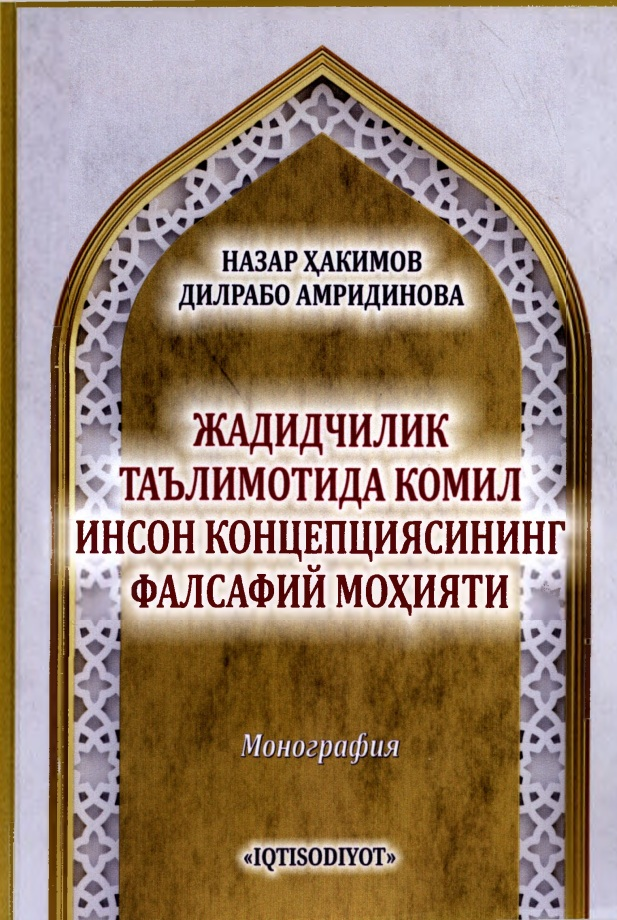
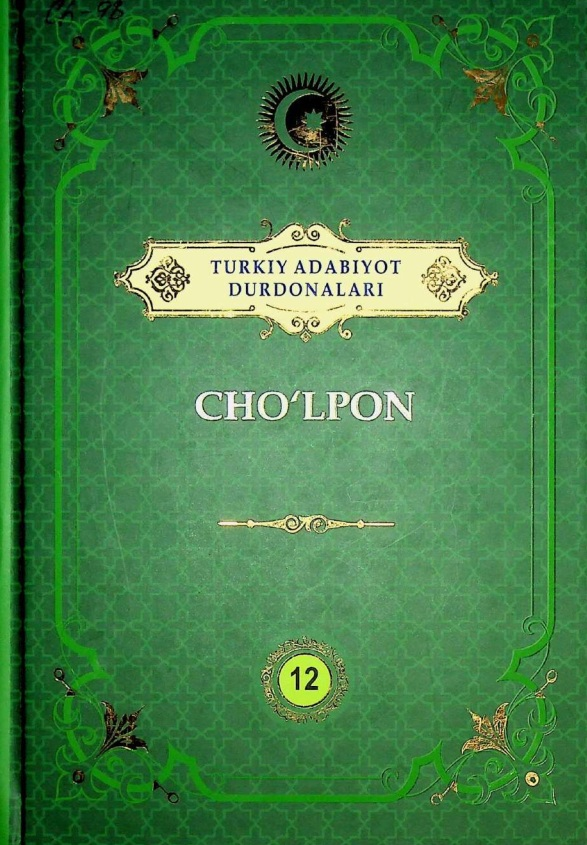
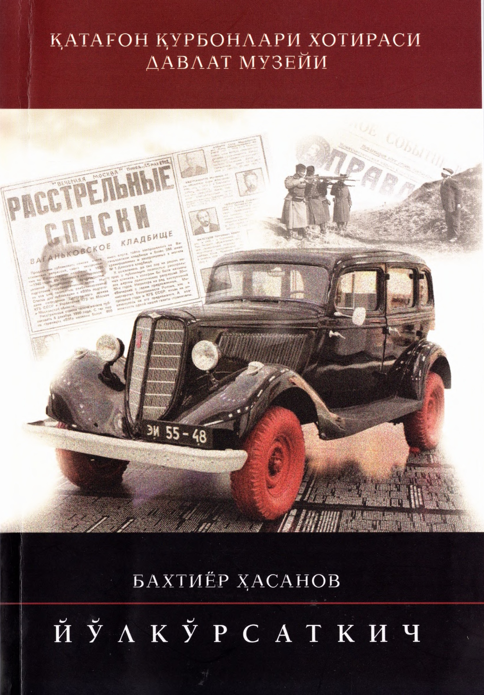

«Turkiston Muxtoriyati» asari
Turkiston Muxtoriyati Bosh vaziri Mustafo Cho'qay qalamiga mansub tarixiy asar. Davlatning tuzilishi, Konstitutsiyaviy asoslari va xalqaro munosabatlari yoritilgan.

«Qo'qon muxtoriyati va bizning vazifalarimiz»
Behbudiyning Muxtoriyat e'lon qilingan kunlarda Turkiston xalqlariga yo'llagan chaqirig'i. Barcha millat va elatlarni davlatni asrab qolish uchun jipslashishga chorlagan.

«Qo'qon fojiasi va bolsheviklar jinoyati»
1918-yil fevral oyida qizil armiya va arman dashnoqlari tomonidan Qo'qon shahrining yondirilishi va Muxtoriyatning qonga botirilishi tafsilotlari.

HujjatTurkiston Muxtoriyati Milliy Majlisi qarorlari
Qo'qonda qabul qilingan davlat ramzlari, militsiya tuzilmasi va moliya tizimi to'g'risidagi tarixiy hujjatlar.
O'rganish
TarixMustafo Cho'qay: Turkiston mustaqilligi yo'lida
Turkiston Muxtoriyati Bosh vaziri Mustafo Cho'qayning milliy ozodlik kurashi va Muxtoriyat fojiasi haqidagi kitobi.
O'rganishMuxtoriyat Konstitutsiyasi loyihasi asoslari
Demokratik parlamentarizm, inson huquqlari va barcha millatlarga teng imkoniyatlar kafolati belgilangan loyiha.
O'rganish